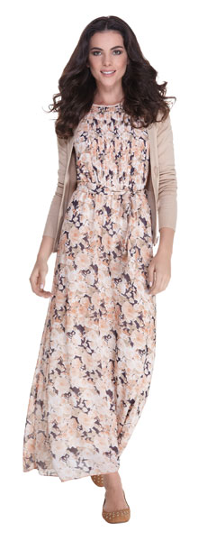
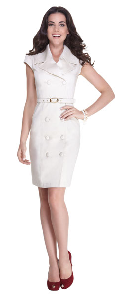

A coleção da Madame Ms é planejada para vestir as diferentes situações do dia a dia de uma mulher. Em quatro linhas distintas, Casual, Social, Clássicos e Jeans você poderá encontrar peças e acessórios adequados a cada ocasião.
Com forte influencia das tendências de cores, formas e estampas da estação, esta linha oferece looks mais despojados sem perder a sofisticação e elegância. Ela é perfeita para situações mais informais mesmo no ambiente de trabalho.
- 
- 